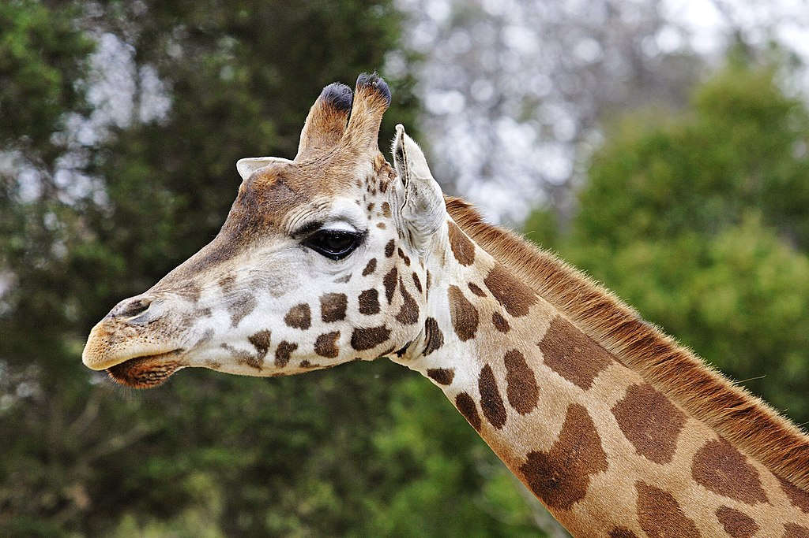

Chi Hươu cao cổ (tên khoa học Giraffa) là một chi các động vật có vú thuộc bộ Guốc chẵn, là động vật cao nhất trên cạn và động vật nhai lại lớn nhất. Nó được phân loại trong họ Giraffidae, cùng với họ hàng gần nhất còn tồn tại của nó là hươu đùi vằn. Chi có 11 loài, bao gồm loài điển hình Giraffa camelopardalis. Trong số này, có bảy loài tiền sử đã tuyệt chủng được biết đến qua các hóa thạch, còn bốn loài hiện còn sống.[1] Tuy Giraffa từng được coi là một loài hiện còn có chín phân loài, các nhà nghiên cứu ADN ty thể của Giraffa đã khám phá bốn loài riêng hiện còn sinh tồn.[2][3] Vì thế, chi Giraffa gồm các loài Giraffa giraffa (hươu cao cổ phương nam), Giraffa tippelskirchi (hươu cao cổ Maasai), Giraffa reticulata (hươu cao cổ Somalia), và Giraffa camelopardalis (hươu cao cổ phương bắc).
Chi Hươu cao cổ (tên khoa học Giraffa) là một chi các động vật có vú thuộc bộ Guốc chẵn, là động vật cao nhất trên cạn và động vật nhai lại lớn nhất. Nó được phân loại trong họ Giraffidae, cùng với họ hàng gần nhất còn tồn tại của nó là hươu đùi vằn. Chi có 11 loài, bao gồm loài điển hình Giraffa camelopardalis. Trong số này, có bảy loài tiền sử đã tuyệt chủng được biết đến qua các hóa thạch, còn bốn loài hiện còn sống.[1] Tuy Giraffa từng được coi là một loài hiện còn có chín phân loài, các nhà nghiên cứu ADN ty thể của Giraffa đã khám phá bốn loài riêng hiện còn sinh tồn.[2][3] Vì thế, chi Giraffa gồm các loài Giraffa giraffa (hươu cao cổ phương nam), Giraffa tippelskirchi (hươu cao cổ Maasai), Giraffa reticulata (hươu cao cổ Somalia), và Giraffa camelopardalis (hươu cao cổ phương bắc).
Hươu cao cổ có phạm vi phân bố rải rác từ Tchad ở miền bắc đến Nam Phi ở miền nam, và từ Niger ở miền tây đến Somalia ở miền đông châu Phi. Hươu cao cổ thường sống ở xavan, đồng cỏ và rừng thưa. Nguồn thức ăn chính của chúng là lá cây keo mà chúng gặm ở độ cao mà hầu hết động vật ăn cỏ khác không thể với tới. Sư tử có thể săn hươu cao cổ, và con non là mục tiêu của báo hoa mai, linh cẩu đốm và chó hoang châu Phi. Trong các trận đánh khi cổ được dùng làm vũ khí, con đực dùng cách này củng cố hệ thống cấp bậc xã hội.
Toàn thân được bao phủ bởi những đốm không đều nhau trên lớp lông vàng đến đen phân chia bởi màu trắng, trắng nhờ, vàng nâu. Giống đực có thể đạt chiều cao từ 4,8 tới 5,5 mét (16 tới 18 foot) và cân nặng lên tới 1.300 kilôgam (3.000 pound). Kỷ lục đo được của một con hươu cao cổ là cao 5,87 m (19,2 ft) và nặng khoảng 2.000 kg (4.400 lb). Giống cái thì thường có chiều cao và cân nặng thấp hơn giống đực một chút, vào khoảng 828 kg.
 Hươu cao cổ là loài động vật thuộc giống hươu và bò, nhưng lại được phân nhóm họ khác với các loài kia, đó là họ Hươu cao cổ, họ này bao gồm hươu cao cổ và một loài họ gần nhất, là hươu đùi vằn. Phạm vi sinh sống của hươu cao cổ trải dài từ Tchad cho tới Nam Phi.
Hươu cao cổ là loài động vật thuộc giống hươu và bò, nhưng lại được phân nhóm họ khác với các loài kia, đó là họ Hươu cao cổ, họ này bao gồm hươu cao cổ và một loài họ gần nhất, là hươu đùi vằn. Phạm vi sinh sống của hươu cao cổ trải dài từ Tchad cho tới Nam Phi.
Hươu cao cổ có thể sinh sống được tại các thảo nguyên, đồng cỏ hoặc rừng núi. Tuy nhiên, khi thức ăn trở nên khan hiếm, chúng sẽ đánh bạo đi vào vùng có cây cối rậm rạp hơn. Chúng thường ưa cư ngụ tại các vùng đất có nhiều cây keo. Loài này thường uống một lượng lớn nước trong một lần và có thể giữ nước lâu ở trong cơ thể, nên chúng có thể sống tại những nơi khô cằn trong một thời gian dài.

Hươu cao cổ biết chạy nhanh và trong trường hợp khẩn cấp có thể đạt tới tốc độ nước đại là 55 km/h, có nghĩa là ở khoảng cách ngắn chúng có thể đuổi kịp ngựa đua.